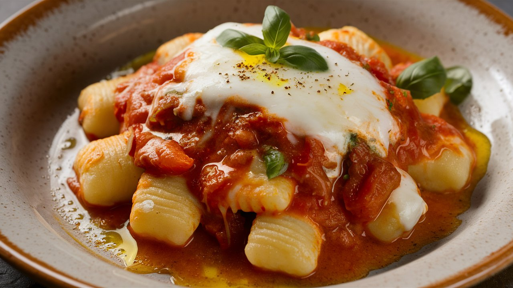

Gnocchi alla Sorrentina
|
Ingredients:
- Potato gnocchi (store-bought or homemade) - 1 pound
- Marinara sauce - 1 1/2 cups
- Fresh mozzarella cheese - 1 ball, sliced
- Parmesan cheese - 1/4 cup, grated
- Fresh basil - 1/4 cup, chopped
- Salt - to taste
- Black pepper - to taste
- Olive oil - 1 tbsp (optional)
|
Method:
- Cook the gnocchi: Cook the gnocchi according to package instructions or your preferred method. Drain and set aside.
- Heat the marinara sauce: Heat the marinara sauce in a saucepan over medium heat.
- Combine gnocchi and sauce: Add the cooked gnocchi to the heated marinara sauce and toss to coat evenly.
- Assemble the dish: Transfer the gnocchi and sauce mixture to a baking dish. Top with sliced mozzarella cheese and grated Parmesan cheese.
- Bake: Bake in a preheated oven at 375°F (190°C) for 15-20 minutes, or until the cheese is melted and bubbly.
- Garnish and serve: Garnish with chopped fresh basil and a drizzle of olive oil (optional). Serve the Gnocchi alla Sorrentina hot.
|